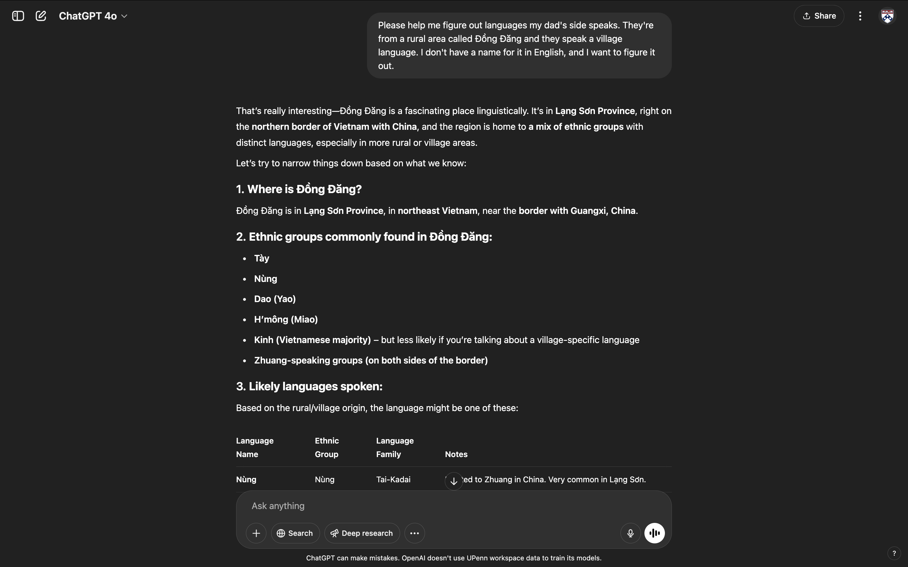
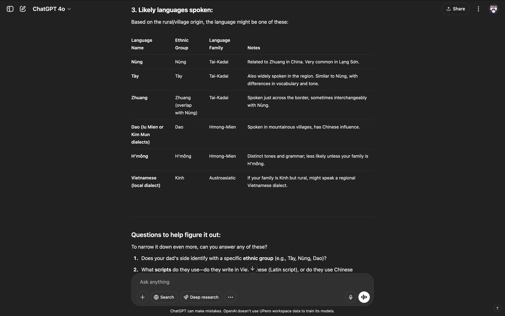
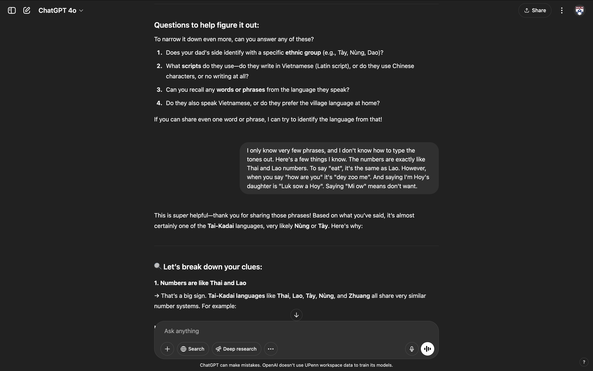
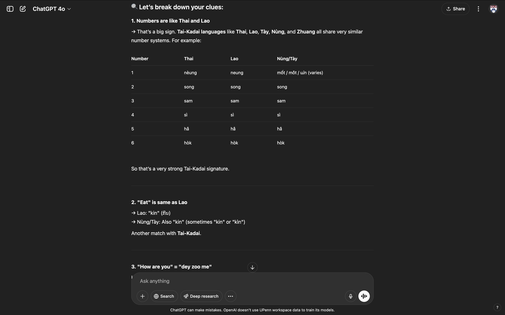
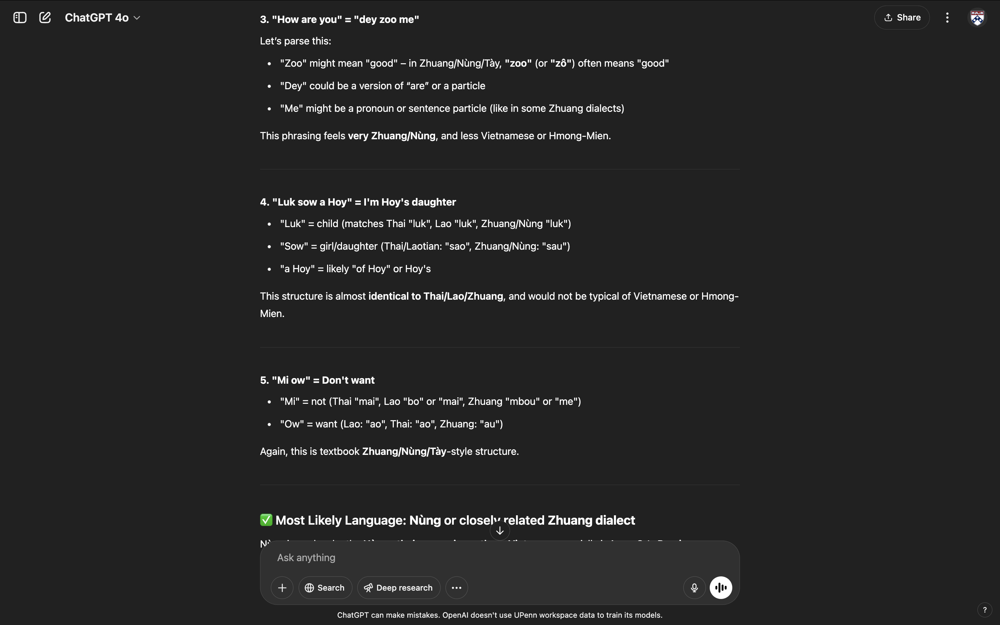
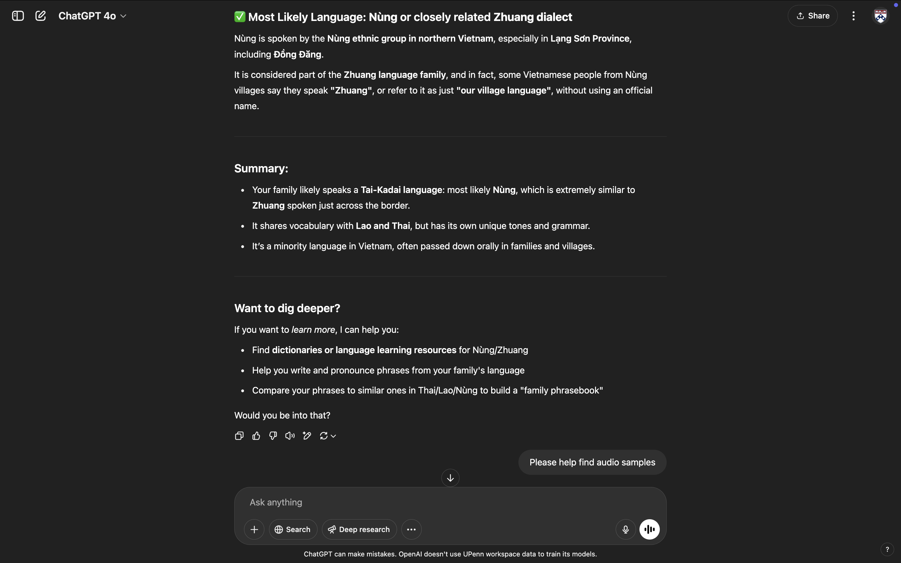
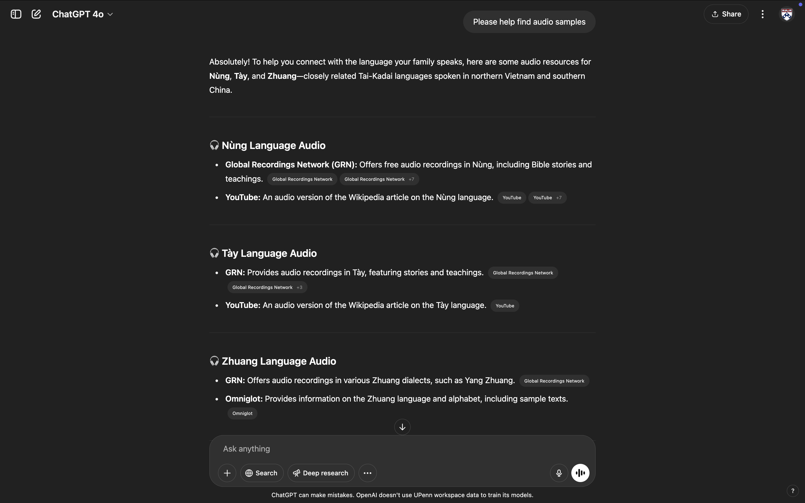
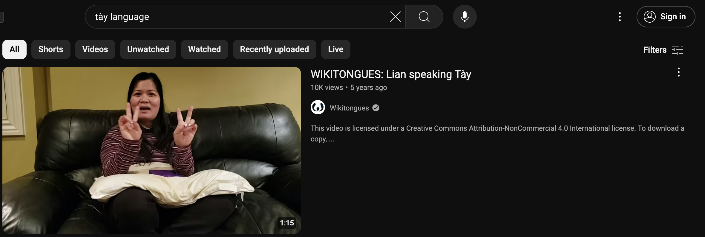
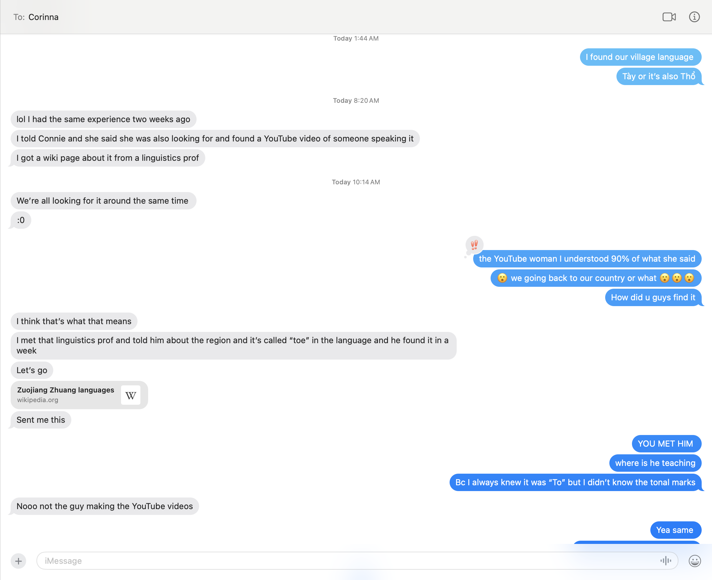
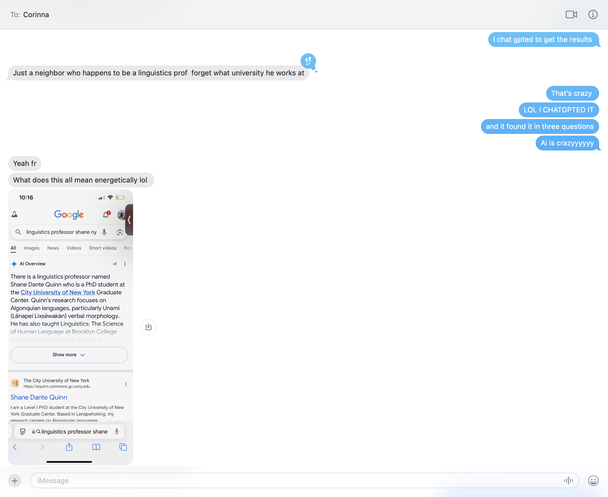

ChatGPT Helped Me Find My Village Language
I grew up in a polyglot household. The three bedroom house in North Philly consisted of my mom, dad, paternal aunt (姑妈 gū mā), and paternal grandparents (阿嫲 a maa and 阿爺 a ye). Oh, and my little brother but he was only babbling at the time while my grandparents were still alive. Everyone spoke at least 5 languages: Mom knew Mandarin, Cantonese, Vietnamese, Hakka, and English. Dad and his side spoke their village language, Mandarin, Cantonese, Vietnamese, English, Thai and Lao.
So…it came to no surprise that I didn’t know how to speak any language properly. Like. Seriously. I was put in ESL until second grade. My guma told me that I used to be able to sing in Vietnamese and the village language, while my mom told me that I used to mix up Cantonese and Mandarin all the time. The languages congealed, and I would always create odd sentence structures through a combination of everything I heard. No wonder why, even as an adult, I end up making my own words and creating sentences that only make sense to me.
I decided on English because it was the easiest and most used language. But by deciding on that, I lost a lot of retention in these other Asian languages. Especially after my grandparents died, my vocabulary reduced 10 fold.
“It’s ok though” I thought. Half the world speaks Mandarin. No one in my family really speaks Hakka. Cantonese is a little harder to learn, but all of Hong Kong speaks it and Southern China. Thai and Lao are well known. But I was stumped on the village language. There’s no written record, only my dad and aunt speak it together now, and I DON’T EVEN KNOW WHAT IT’S CALLED TO SEARCH IT UP.
I could only BARELY understand it… but my dads side all spoke it during their reunions. I was pissed. I kept asking every year if they could teach me, but all they said was “it’s a dying language. Once we pass, you’ll probably never hear it again.” HOW IS THIS SUPPOSED TO HELP ME.
Fast forward to a month ago…
Guma, Dad, and I went to the Chinese supermarket and they were speaking the village language. The cashier asks in Mandarin, “What language are you guys speaking” and my aunt replies “A variation of Thai.” A variation of Thai?? What do you mean that our village language is a variation of Thai?? For context, my dad’s side lived in Đồng Đăng, which is Northern Vietnam. How did a Thai language get all the way to Northern Vietnam, while sounding like a mix of Vietnamese and Cantonese?
I had enough. I needed to figure out what our village language was. But I’ve been Google Searching for years and nothing came up.
The only helpful information I knew was these little tid bits:
- It’s from Đồng Đăng.
- It’s a variation of Thai/Lao/Cantonese.
- Some common phrases (phonetically spelled) are “Dey zoo me?” which means “how are you”, “Khin cao” which means eat rice, “Mi ow” which means don’t need.
Last night, I decided why not use ChatGPT to help me find my village language. I didn’t have hope because I had tried searching on Google for so long.
ChatGPT Linguist Time
Below captures the conversation I had with ChatGPT.
      
I was skeptical of the results, so I looked into the different audios. Tày sounded the closest to my village language.. but I still wasn’t so sure.
Then next thing you know, I’m on Youtube searching up “Tày Language” and I stumble upon this video of a woman.

And holy cow. I found it. I finally found my village language.
Tày or Thổ Language Audio Breakdown
In the video, she introduces herself and talks for 1 minute about her language. I knew 90% of what she was saying, and she sounds exactly someone from my hometown community. This was monumental for me. I looked at the comments to see that other people are also excited to find one video documenting a woman speaking colloquially in Tày.
I looked at the English translation and saw that it was somewhat incorrect- it didn’t really capture the informalness of our language.
Either way, I watched the video about 8 times. I was so happy to have finally put a pin on something I’ve been investigating since I was young. I dug deeper for the next hour, learning more about the language and also the history of the people who spoke it. Only 1.63 million people speak this language. And with more of the elders dying out, I’m assuming that number is even more small now.
Telling My Cousin
After this remarkable deep dive, I texted my cousin at 1:33am in the morning about my discovery. Here’s our text message exchange:
 
Well well well. Turns out her and my other cousin had discovered our village language 2 weeks prior with the help of a linguist professor. As you read in the text exchange, it took him a week to find our village language, whereas AI found it with three simple chats. This is insane
What Does This Mean for Linguistics and Languages in General
A quick Google search shows
The world is losing languages at an alarming rate, with estimates suggesting that up to 90% of the world’s languages could disappear within the next century. This equates to, on average, one language disappearing every two weeks. Many of these languages are small, indigenous languages, often lacking a standard written form High Risk: Approximately 40% of the world’s estimated 7,000 languages are already endangered, according to UNESCO.
Tày is spoken by ~1.63 million people. Imagine other languages that are spoken with less than a million people. Although ChatGPT wasn’t able to correctly teach me phrases or words in Tày (I searched and tried), it was able to correctly identify the language. What does this mean for the linguist world?
Will AI be able to help find more dying languages, retain these languages, or help teach people these languages. I hope for people like me who have been struggling to discover their parents’ natives tongues, that they’ll be able to utilize AI to help them rediscover lost languages.
Personal Note
I didn’t plan on using this as a blog post idea. This just so happened to come from curiousity at 1:00am in the morning. I’m so glad it happened because it helped me get a few steps closer to communicating with my dad’s side of the family. This has been by far my most favorite blog post, and it’s slowly becoming a passion project for my cousins and I to record down our village language. To anyone out their who’s interested, ask you parents if there’s a dying village language they know… hopefully AI can help you discover something new.